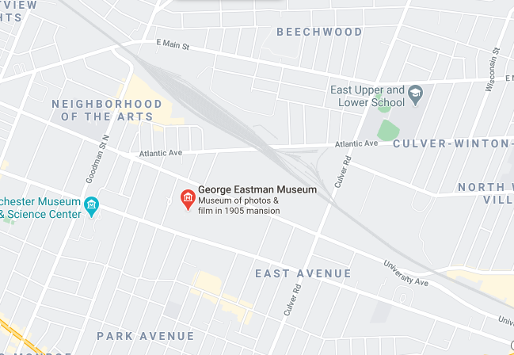

As one of the most charitable donators in Rochester, NY, it is no wonder that George Eastman was highly honored. Responsible for funding Kodak, Rochester Institute of Technology, and a variety of other artistic, educational, clinical and public works across Rochester, Eastman was possibly the greatest philanthropist of his time.
Having died in 1932, Eastman had his will ensure that the rest of his life's work would continue on and promote the growth of his city, and his love of art. Ever since, his home has become a widely visited collection of photography, cinema, and photographic and cinematographic technology.